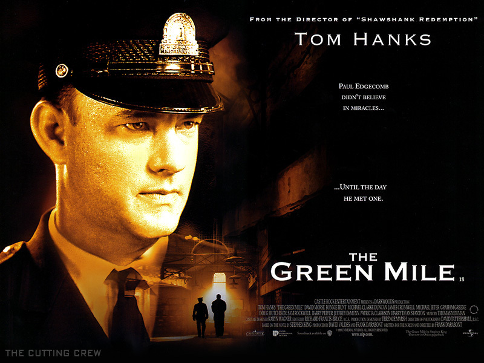

| HOME | ABOUT ME | INTERESTS | HOUSE TOUR |
top 10 movies
|
The Godfather is a 1972 American crime film. In most lists of the best movies of all time recorded, this movie always comes first. I loved this movie because of how the actors lived up their character and also the storyline about mafias in general is remarkable. The film features innumerable violence but it was executed perfectly. I also learned a lot of real-life lessons here that I also used it during my report in my Religious Education class.
Anastasia is a 1997 American animated epic musical alternative history film. When my sister and I were young, our parents bought us DVDs of this movie for each of us and since then, I became hooked to this animated movie. It's not like the other typical cartoons. It includes a magnificent soundtrack that will make you feel all emotions during the entirety of the movie and the storyline was partly based from the real life Grand Duchess Anastasia Nikolaevna of Russia. Up until now, I still feel very elated when I watch this movie.
Shutter Island is a 2010 American neo-noir psychological thriller film. As a Psych major, I really am into watching psychologically-inclined movies and this movie is not an exception. The main character suffers mostly from Dissociative Identity Disorder and this particular illness is the most interesting illness for me. It basically occurs when you possess many personalities and they can appear anytime within you. Plus, Leonardo Dicaprio's acting in this movie is exceptional. Amélie is a 2001 French romantic comedy film. This movie is one of a kind. At first, I really did not get the story and I thought it was really nonsense but while the movie was progressing, I came to realize that it is about the simplicity but the most awesome parts of living our life. Amelie is just a very simple girl that found her significant someone and I think that was the purest part of the movie. This movie will make you wanna find that someone and never let him/her go. Inception is a 2010 science fiction film. Another Dicaprio movie, this amazed me because of the new concepts on entering someone's state of mind and actually altering or installing ideas in it. There were a lot of conflicts in the movie but the flow was executed flawlessly. Although it very mind-bogglind, it is definitely a must watch.
Split is a 2016 American psychological horror-thriller film. This is the most recent movie on my list but it is definitely not one of the least. Split struck me so much because it also talks about Dissociative Identity Disorder again and it deepened my understanding of the disorder itself. This movie will hit you emotionally and will wreck your feelings and just make you think about all your decisions in life. It will surely leave you with quotes that will be hard to forget.  The Green Mile is a 1999 American fantasy crime drama film. When I think of this movie, I think of injustice. The convicted person in this movie is far from guilty but then he was still brought to the death penalty. I shed a lot of tears because despite the criminal being innocent, he possesses special traits. He has mental problems but only wants the best for others. No one believed him and in the end, justice was not uplifted. This is definitely a must watch movie.
Hotel Transylvania is a 2012 American 3D computer-animated fantasy comedy film. All I can say is this movie is a ball of cuteness and watching it makes me very happy. Koizora is a 2007 film based on a cell phone novel of the same name. I first watched this Japanese movie way back in High School and I still can't forget it until now. It makes me cry every time because the love between the couple did not last forever physically but eternally, it sure did. This is because the guy died of a serious illness and left the girl shortly after they have reunited. They were in bad terms for a long time but when they were finally getting back together, all else failed. It was bittersweet.
The Shawshank Redemption is a 1994 American drama film written. Last but not the least, this movie is also part of the best films ever made in history. This is also about injustice and tells us how unfair the system is anywhere. But as the convicted went through with his service, he met someone that inspired him and made me continue to have a will to live. In the end, even if the beginning was full of sufferings, it became beautiful as he finally got to live freely again. top 5 series Game of Thrones is an American fantasy drama television series. It is basically about different leaders from different Houses or legacies fighting for the throne. Season 7 just actually ended and it's really hard to wait for another year for the last season huhu. The good thing about this series is it is not centered within only one story. Every character has their own limelight and makes the story more interesting that will make you hold on to your chair til the next episode. Every character also has different characteristics that will make you fall in love or despise that someone in an extreme way.
Boys Over Flowers is a 2009 South Korean television series. Because of this drama, I fell in love with the Korean culture. Korean dramas, kpops, etc.. but not really until now. I have already watched more than 50 korean dramas but this remains my all-time favorite.
Black Mirror is a British science fiction television anthology series. There are only a few episodes per season but each episode will leave your mind thinking. This series is about how dangerous advancements in technology can get. Everything should have its limits and humans should abide by that principle.
Ghost Whisperer is an American television supernatural drama series. This series already ended way back in 2010. I only watched this because I found a CD of it that my sister bought and then I got hooked to it. The story revolves around a woman who can see spirits and actually helps them to cross over to the light. Every episode, a different spirit would show up with a different story in life. But there was also a point where her own personal life got involved and she actually lost someone dear to her life.
Fated to Love You is a 2014 South Korean television series. I have already watched this many times and I am not getting tired of it. This korean drama hit me because of how pure the actors have done their work. It's about a couple who accidentally had a child who do not know each other at all, but upon knowing of the incident, as time went by, they fell in love with each other. Though there were many obstacles that came by in their life, they never gave up on each other. This still makes me cry every time. |